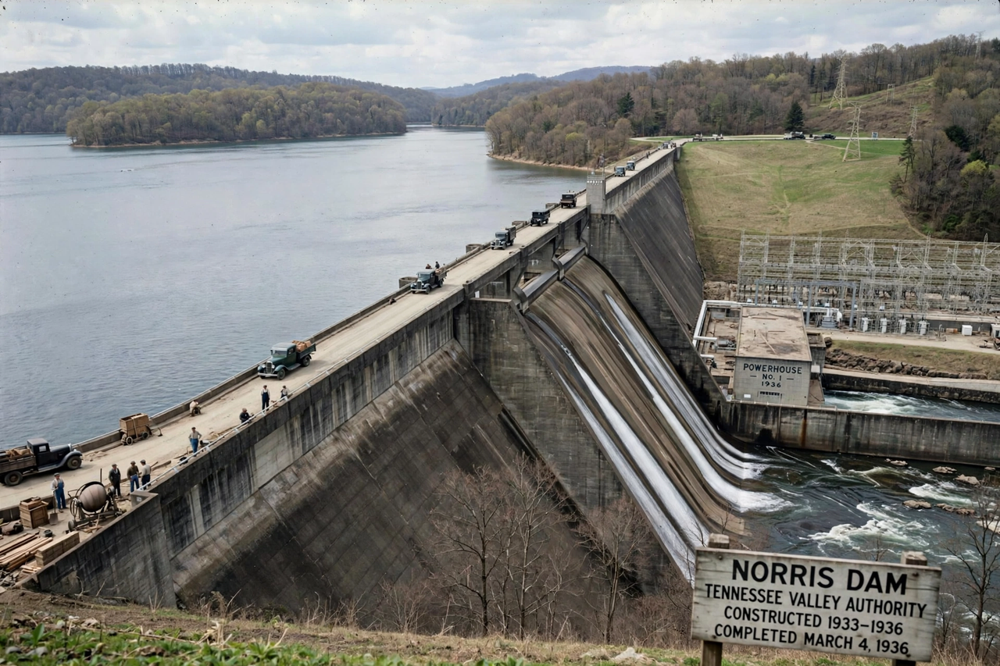

From Wikipedia, the free encyclopedia
| Tennessee Valley Authority | |
|---|---|
 | |
| Founded | 18 May 1933 |
| Headquarters | Knoxville, Tennessee |
| Type | Federal government corporation |
| Service area | Tennessee Valley (parts of 7 states) |
| Industry | Electric utility, flood control, navigation |
The Tennessee Valley Authority (TVA) is a federally owned electric utility corporation in the United States. The TVA's service area covers all of Tennessee, portions of Alabama, Mississippi, and Kentucky, and small slices of Georgia, North Carolina, and Virginia. It was created in 1933 as part of President Franklin D. Roosevelt's New Deal.
Signed into law on 18 May 1933, the TVA Act charged the authority with improving navigation and flood control on the Tennessee River, reforestation, and the economic development of the Tennessee Valley, one of the poorest regions of the country. Under its first chairman, Arthur Morgan, and director David Lilienthal, the TVA built a system of dams — beginning with Norris Dam (1936) — that controlled flooding, created a 650-mile navigation channel, and brought cheap hydroelectric power to rural homes and farms. Its constitutionality was upheld in Ashwander v. TVA (1936).
During the Second World War the TVA powered aluminium plants and the Manhattan Project facilities at Oak Ridge. After the war it became the nation's largest public utility, shifting toward coal-fired and then nuclear generation. It remains the largest public power provider in the United States, serving some ten million people, and operates without taxpayer appropriations for its power programme.
See also: New Deal · Works Progress Administration · Franklin D. Roosevelt